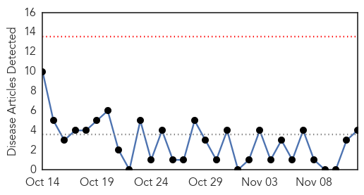
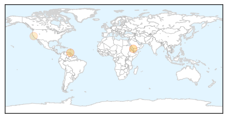

MERS
30-Day Web Trend
0 alerts, 0 warnings

30-Day Twitter Trend
2 alerts, 2 warnings

Article Locations

Article Confidences
Top Articles:
Top Tweets:
- 0.642
- AFD Blog `Saudi MOH: 1 MERS Case In Riyadh & Statement On Vaccine Meeting' MERS-CoV https://t.co/xG9U5sGZvu
Swine Flu
30-Day Web Trend
0 alerts, 0 warnings

30-Day Twitter Trend
0 alerts, 0 warnings
Article Locations
Article Confidences

Top Articles:
Top Tweets:
-
No tweets found for Nov 12, 2015